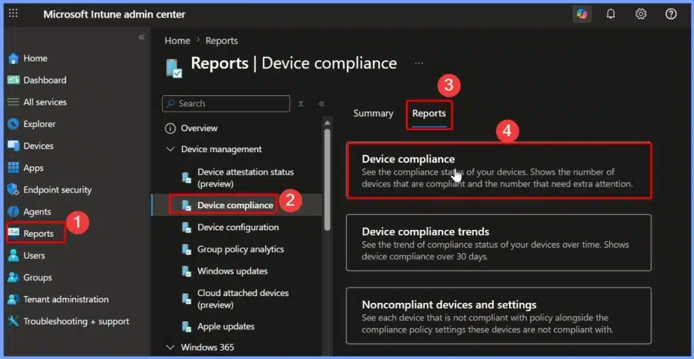
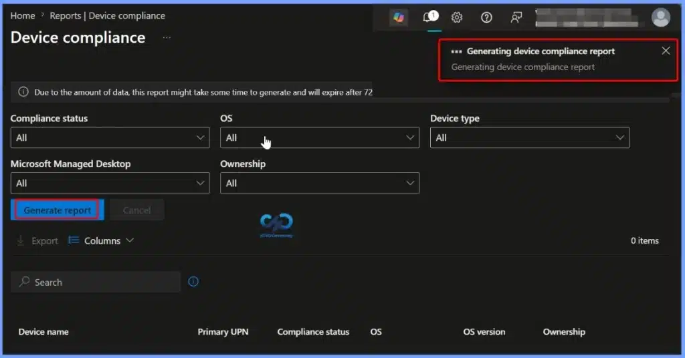
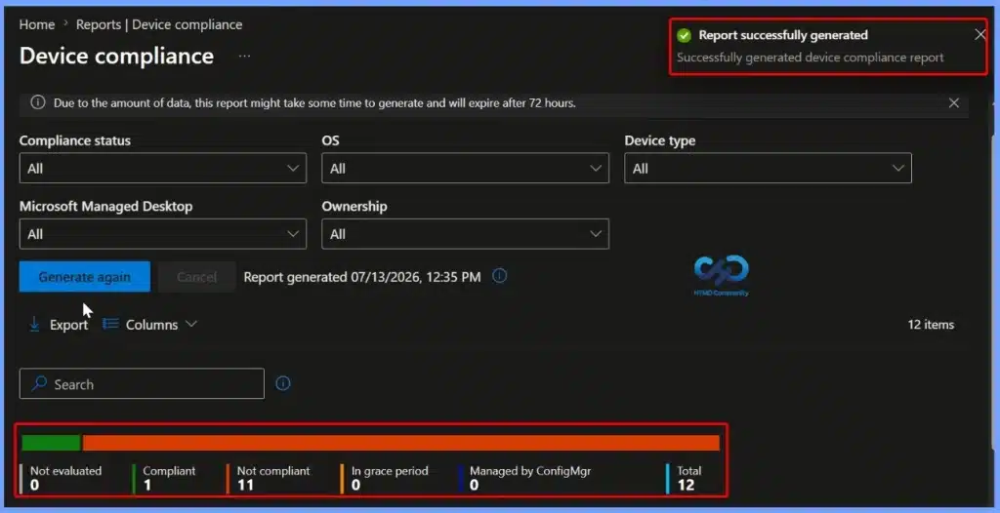
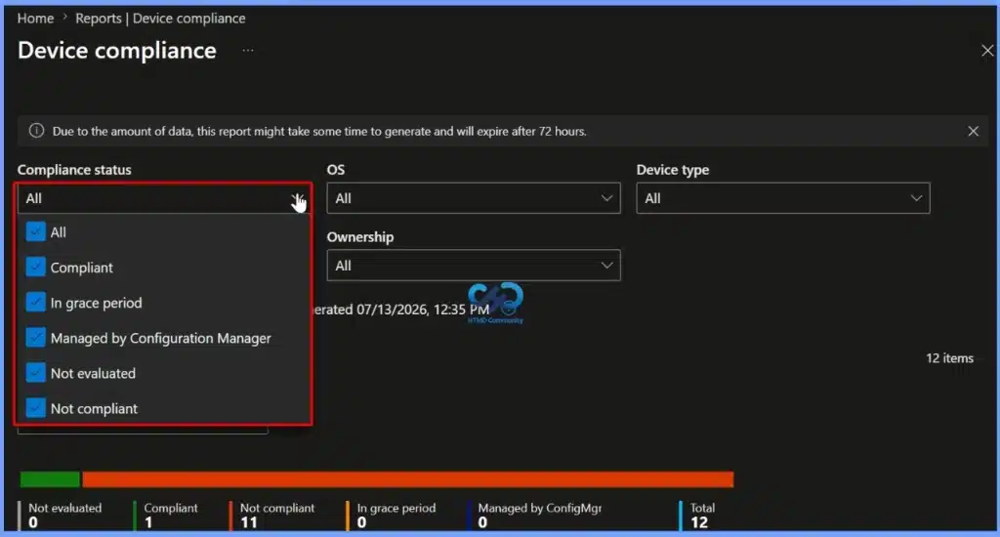
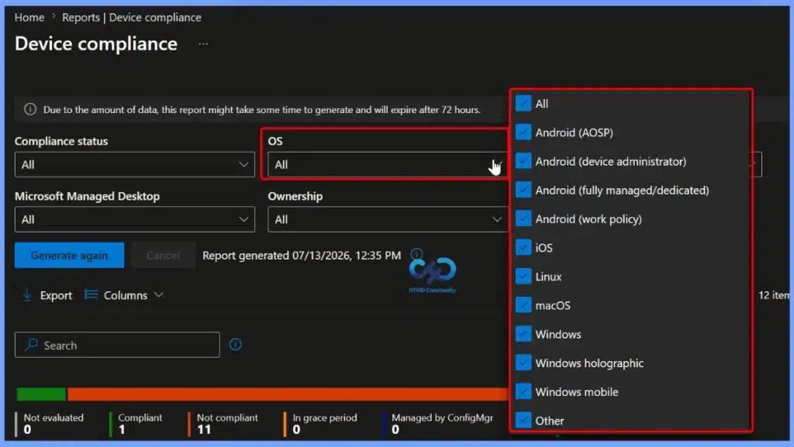
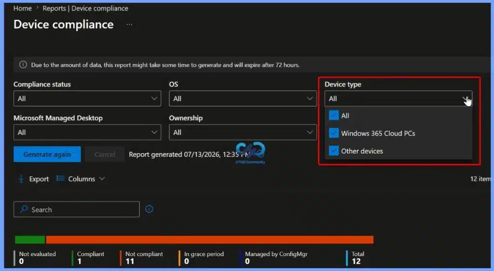
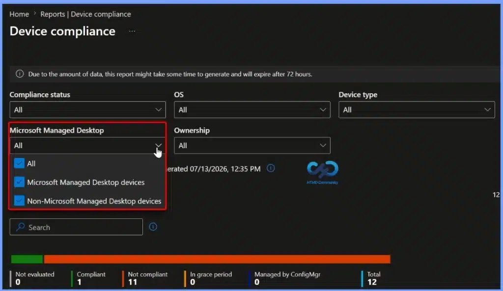
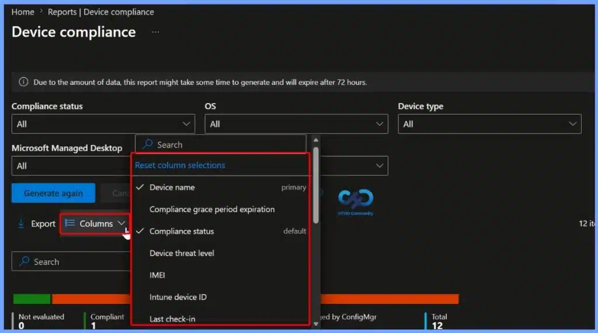
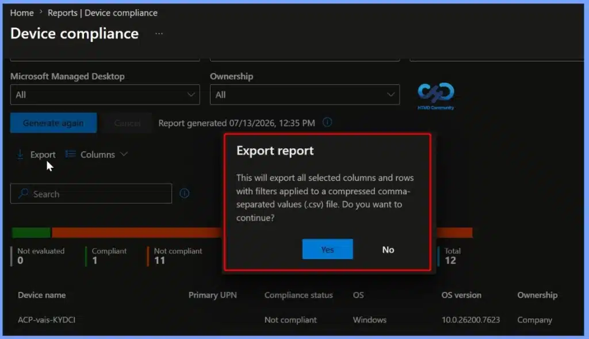

Key Takeaways
- Monitor Device Compliance: View the compliance status of all managed devices and quickly identify devices that are compliant, noncompliant, or in other compliance states.
- Identify Noncompliance Issues: Drill down into individual devices to see the specific compliance settings that caused them to become noncompliant.
- Organization-Wide Compliance Overview: The Device Compliance Report (Organisational) provides a comprehensive view of compliance across the entire organisation, even in large environments.
- Generate Customised Reports: Use filters and the Generate report option to refresh the data and create reports based on your specific compliance requirements.
- Simplified Analysis: The report includes aggregated metrics, visual charts, and searchable, sortable device records, making it easier to analyse compliance trends and prioritise remediation.
Microsoft Intune Device Compliance Report for Managed Devices! Microsoft Intune provides Device Compliance Reports to help administrators monitor the compliance status of managed devices across their organisation. Available in the Microsoft Intune admin center, these reports offer insights into compliant, noncompliant, and in-progress devices, enabling IT teams to quickly identify issues and take corrective actions to maintain security and compliance.
Table of Content
Microsoft Intune Device Compliance Report for Managed Devices
The Device Compliance Report is designed to efficiently handle large environments by presenting aggregated compliance metrics along with detailed device-level information. Administrators can apply filters, generate the latest report data, and use search and sorting capabilities to analyse compliance trends, investigate noncompliant devices, and simplify compliance monitoring across their Intune-managed fleet.
- Sign in to the Microsoft Intune admin center.
- Navigate to Reports > Device Compliance > Reports.
- Select Device compliance to open the organisational compliance report.
| Device compliance |
|---|
| See the compliance status of your devices. Shows the number of compliant devices and the number that need extra attention. |

Generate the Latest Device Compliance Report in Microsoft Intune
The Device Compliance report in the Microsoft Intune admin center allows administrators to generate the latest compliance data for managed devices. Once the report is generated, Intune displays detailed device compliance information, including the device name, primary user (UPN), compliance status, operating system, OS version, and ownership.

Review Device Compliance Summary After Report Generation
After the Device Compliance report is generated, Microsoft Intune displays the latest compliance status of your managed devices. The report shows a simple summary of device states, such as Compliant, Not Compliant, Not Evaluated, In Grace Period, and Managed by Configuration Manager. This overview helps administrators quickly understand the organisation’s compliance status and identify devices that need attention.

Filter Devices by Compliance Status in the Device Compliance Report
The Compliance status filter lets administrators view devices based on their current compliance state. You can select one or more options, including Compliant, Not Compliant, Not Evaluated, In Grace Period, and Managed by Configuration Manager, to display only the devices that match the selected status. This makes it easier to focus on specific groups of devices and quickly identify those that require further investigation or remediation.
- Compliance status
- All
- Compliant
- In grace period
- Managed by Configuration Manager
- Not evaluated
- Not compliant

Filter Device Compliance Reports by Operating System
The OS filter allows administrators to view compliance data for specific operating systems. You can select one or more platforms, including Windows, macOS, Linux, iOS, Android (AOSP), Android (Device Administrator), Android (Fully Managed/Dedicated), Android (Work Profile), Windows Holographic, Windows Mobile, and Other. Filtering by operating system helps IT administrators quickly analyse compliance status for a particular platform and simplify troubleshooting and reporting.

Device Type Filter
The Device type filter allows administrators to view device compliance data based on the type of managed device. You can filter the report to display Windows 365 Cloud PCs, Other devices, or All device types. Using this filter helps you focus on a specific device category, making it easier to monitor compliance, investigate issues, and generate more targeted compliance reports.

Microsoft Managed Desktop Filter
The Microsoft Managed Desktop filter allows administrators to view compliance data based on whether devices are enrolled in the Microsoft Managed Desktop (MMD) service. You can filter the report to show Microsoft Managed Desktop devices, Non-Microsoft Managed Desktop devices, or All devices. This filter helps administrators quickly separate MMD-managed devices from other managed devices, making it easier to monitor compliance, troubleshoot issues, and generate targeted compliance reports.

Customise Report Columns Using the Columns Filter
The Columns filter lets administrators customise the information displayed in the Device Compliance report. You can add or remove columns such as Device name, Compliance status, Compliance grace period expiration, Device threat level, IMEI, Intune device ID, Last check-in, and other available fields.
You can also use the Search option to quickly find a specific column or reset column selections to restore the default view. This feature helps you to display only the information you need for monitoring, troubleshooting, and compliance reporting.

Export Device Compliance Report
The Export option allows administrators to download the Device Compliance report as a CSV (.csv) file for offline analysis and record keeping. The exported file includes all the selected columns and filtered device records currently displayed in the report. This makes it easy to share compliance data with other teams, create custom reports, perform further analysis in Microsoft Excel, or maintain compliance and audit documentation.

Need Further Assistance or Have Technical Questions?
Join the LinkedIn Page and Telegram group to get the latest step-by-step guides and news updates. Join our Meetup Page to participate in User group meetings. Also, join the WhatsApp Community and the Whatsapp channel to get the latest news on Microsoft Technologies. We are there on Reddit as well.
Resources
Author
Jitesh, Microsoft MVP, has over six years of working experience in the IT Industry. He writes and shares his experiences related to Microsoft device management technologies and IT Infrastructure management. His primary focus is Windows 10/11 Deployment solution with Configuration Manager, Microsoft Deployment Toolkit (MDT), and Microsoft Intune.